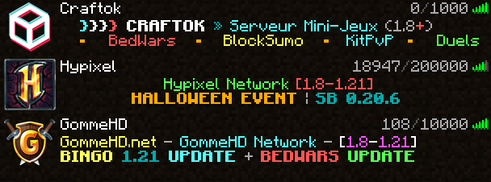
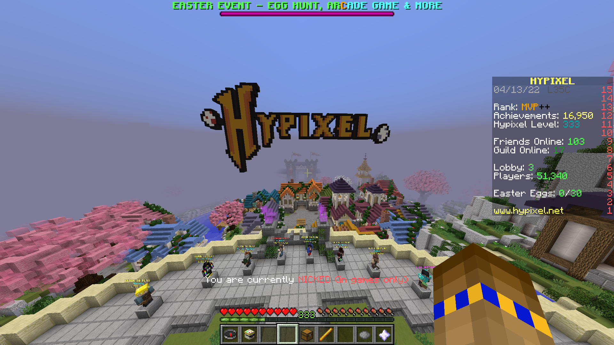

Raison 11 : Les minis jeux de Minecraft
Raison 11 : Les minis jeux de Minecraft 
Parmi toutes les manières qu'il y a de Minecraft, il y a également les minis-jeux :
Il existe différents types de minis jeux (exemples) (skywars, bedwars, build battle, lucky block, etc...)
le but de ceux-ci sont de divertir les joueurs dans des modes de jeux innovants, de défis ou de compétition, et offre une expérience unique et exitante, que ce soit pour relever des défis, passer du temps avec des amis, ou tout simplement s'amuser, les minis-jeux ajoutent une dimension dynamique a l'univers de minecraft
les minis jeux peuvent être joués en solo mais aussi sur des serveurs de mini jeux, car on peut y rassembler des joueurs en masse pour fluidifier les minis jeux (pas beosin d'attendre longtemps pour trouver un partenaire avec qui jouer)
les seveurs les plus connus sont : Hypixel, Mineplex, The Hive, Cubecraft, GommeHD, etc...


Conclusion
La liberté de création dans Minecraft n'est pas seulement un élément clé du jeu, mais elle est également un moyen pour les joueurs de s'exprimer et d'explorer leur imagination. Que vous soyez un architecte en herbe ou un créateur chevronné, Minecraft vous offre une toile vierge pour exprimer votre créativité.